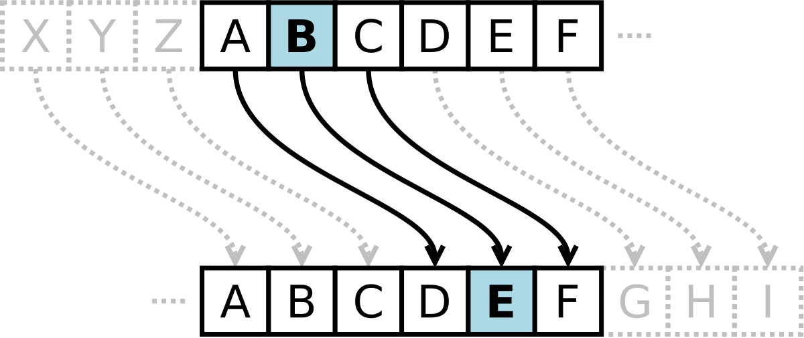
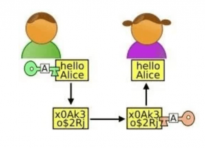

O Que faz a criptografia?
A criptografia envolve a conversão de texto simples legível por humanos em texto incompreensível, o que é conhecido como texto cifrado. Codificar a informação de modo que somente destinatários autorizados possam ter acesso a ela; encriptar.

O Que faz a descriptografia?
A descriptografia é a operação inversa da criptografia.
Esse é o processo realizado para “destravar” seus arquivos criptografados.
Em outras palavras, a descriptografia é o processo de transformação de dados que foram tornados ilegíveis por meio da criptografia.
